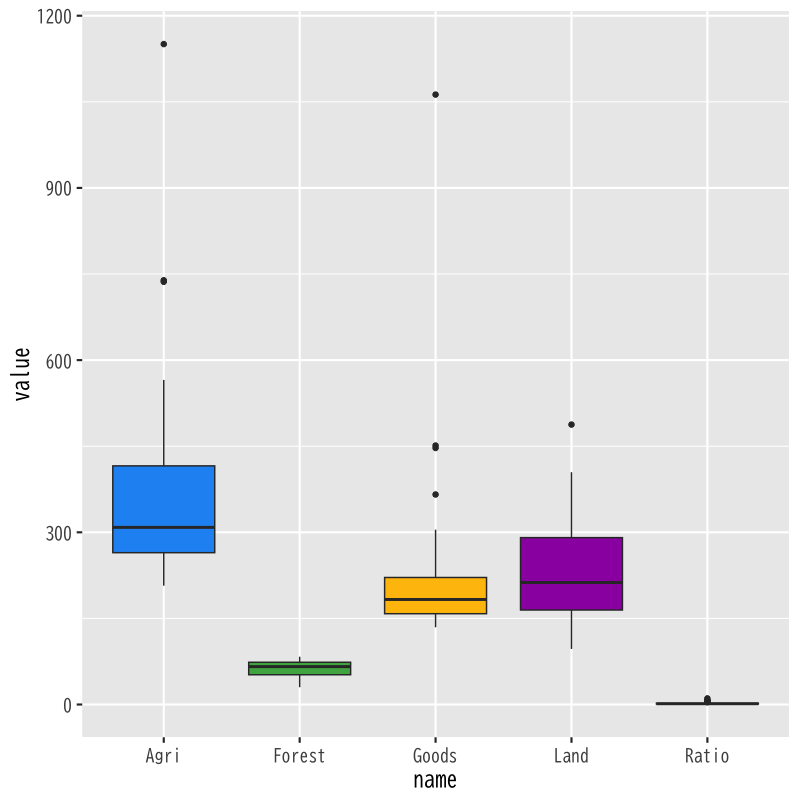
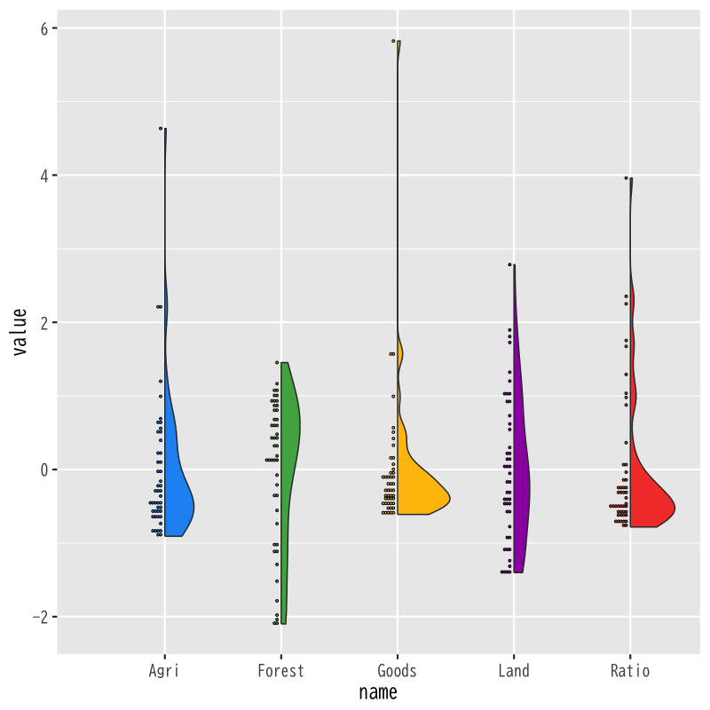
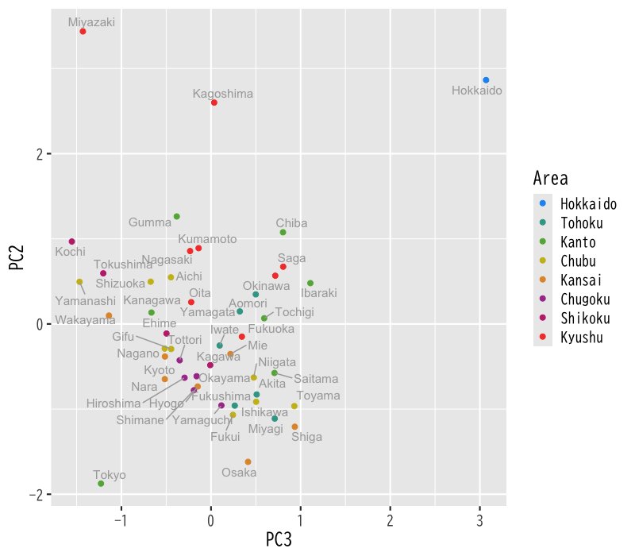
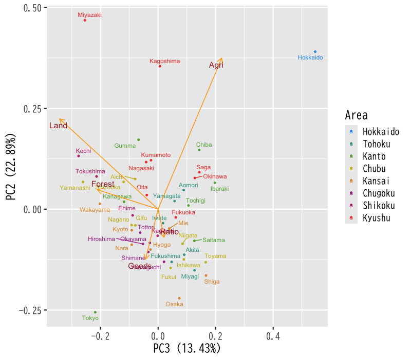

主成分分析
評価と視覚化
(Press ? for help, n and p for next and previous slide)
講義の内容
- 第1日 : 主成分分析の考え方
- 第2日 : 分析の評価と視覚化
主成分分析の復習
主成分分析
- 多数の変量のもつ情報の分析・視覚化
- 変量を効率的に縮約して少数の特徴量を構成する
- 変量の間の関係を明らかにする
- 分析の方針
- データの情報を保持する = データを区別することができる
- データの情報を最大限保持する変量の線形結合を構成
- データの情報を最大限反映する座標(方向)を探索
分析の考え方
- 1変量の特徴量
\(\boldsymbol{a}^{\mathsf{T}}\boldsymbol{x}_1,\dotsc,\boldsymbol{a}^{\mathsf{T}}\boldsymbol{x}_n\)
を構成
- 観測データ \(\boldsymbol{x}_1,\dots,\boldsymbol{x}_n\) のもつ情報を最大限保持するベクトル \(\boldsymbol{a}\) を 適切に 選択
- \(\boldsymbol{a}^{\mathsf{T}}\boldsymbol{x}_1,\dotsc,\boldsymbol{a}^{\mathsf{T}}\boldsymbol{x}_n\) の変動 (ばらつき) が最も大きい方向を選択
最適化問題
制約条件 \(\|\boldsymbol{a}\|=1\) の下で以下の関数を最大化せよ
\begin{equation} f(\boldsymbol{a}) = \sum_{i=1}^n(\boldsymbol{a}^{\mathsf{T}}\boldsymbol{x}_i -\boldsymbol{a}^{\mathsf{T}}\bar{\boldsymbol{x}})^2, \quad \bar{\boldsymbol{x}} = \frac{1}{n}\sum_{i=1}^n\boldsymbol{x}_i \end{equation}
行列による表現
中心化したデータ行列
\begin{equation} X = \begin{pmatrix} \boldsymbol{x}_{1}^{\mathsf{T}}-\bar{\boldsymbol{x}}^{\mathsf{T}} \\ \vdots \\ \boldsymbol{x}_{n}^{\mathsf{T}}-\bar{\boldsymbol{x}}^{\mathsf{T}} \end{pmatrix} = \begin{pmatrix} x_{11}-\bar{x}_1 & \cdots & x_{1p}-\bar{x}_p\\ \vdots & & \vdots \\ x_{n1}-\bar{x}_1 & \cdots & x_{np}-\bar{x}_p \end{pmatrix} \end{equation}評価関数 \(f(\boldsymbol{a})\) は行列 \(X^{\mathsf{T}}X\) の二次形式
\begin{equation} f(\boldsymbol{a}) = \boldsymbol{a}^{\mathsf{T}}X^{\mathsf{T}}X\boldsymbol{a} \end{equation}
固有値問題
最適化問題
\begin{equation} \text{maximize}\quad f(\boldsymbol{a}) = \boldsymbol{a}^{\mathsf{T}}X^{\mathsf{T}}X\boldsymbol{a} \quad\text{s.t.}\quad \boldsymbol{a}^{\mathsf{T}}\boldsymbol{a}=1 \end{equation}解の条件
\(f(\boldsymbol{a})\) の極大値を与える \(\boldsymbol{a}\) は \(X^{\mathsf{T}}X\) の固有ベクトルである
\begin{equation} X^{\mathsf{T}}X\boldsymbol{a} = \lambda\boldsymbol{a} \end{equation}- 未定係数法を用いている
主成分負荷量と主成分得点
- \(\boldsymbol{a}\) : 主成分負荷量 (principal component loading)
- \(\boldsymbol{a}^{\mathsf{T}}\boldsymbol{x}_i\) : 主成分得点 (principal component score)
第1主成分負荷量
\(X^{\mathsf{T}}X\) の第1(最大)固有値 \(\lambda_1\) に対応する固有ベクトル \(\boldsymbol{a}_1\)
第\(k\)主成分負荷量
\(X^{\mathsf{T}}X\) の第 \(k\) 固有値 \(\lambda_k\) に対応する固有ベクトル \(\boldsymbol{a}_k\)
演習
問題
- 以下の問に答えなさい
ベクトル\(\boldsymbol{a}\) を \(X^{\mathsf{T}}X\) の単位固有ベクトルとするとき
\begin{equation} f(\boldsymbol{a})=\boldsymbol{a}^{\mathsf{T}}X^{\mathsf{T}}X\boldsymbol{a} \end{equation}の値を求めよ
行列\(X\)を中心化したデータ行列， ベクトル\(\boldsymbol{a}_{k}\)を第\(k\)主成分負荷量とするとき， 第\(k\)主成分得点の平均まわりの平方和
\begin{equation} \sum_{i=1}^n(\boldsymbol{a}_{k}^{\mathsf{T}}\boldsymbol{x}_i -\boldsymbol{a}_{k}^{\mathsf{T}}\bar{\boldsymbol{x}})^2 \end{equation}を \(X\)と\(\boldsymbol{a}_{k}\)で表せ
解答例
固有値・固有ベクトルの性質を利用する
\(X^{\mathsf{T}}X\)の 固有値・固有ベクトルを \(\lambda_{k}, \boldsymbol{a}_{k}\) とする． \(\boldsymbol{a}=\boldsymbol{a}_{k}\)とすれば
\begin{align} f(\boldsymbol{a}_{k}) &=\boldsymbol{a}_{k}^{\mathsf{T}}X^{\mathsf{T}}X\boldsymbol{a}_{k}\\ &=\boldsymbol{a}_{k}^{\mathsf{T}}\lambda_{k}\boldsymbol{a}_{k} &&\text{(固有ベクトル)}\\ &=\lambda_{k} &&\text{(単位ベクトル)} \end{align}
定義に従い計算すればよい(前回の復習)
\begin{align} f(\boldsymbol{a}_{k}) &= \sum_{i=1}^{n}(\boldsymbol{a}_{k}^{\mathsf{T}}\boldsymbol{x}_i -\boldsymbol{a}_{k}^{\mathsf{T}}\bar{\boldsymbol{x}})^2\\ &= \sum_{i=1}^{n} (X\boldsymbol{a}_{k})_{i}^{2}\\ &= \sum_{i=1}^{n} (X\boldsymbol{a}_{k})_{i} (X\boldsymbol{a}_{k})_{i}\\ &= (\boldsymbol{a}_{k}^{\mathsf{T}}X^{\mathsf{T}}) (X\boldsymbol{a}_{k}) = \boldsymbol{a}_{k}^{\mathsf{T}}X^{\mathsf{T}}X\boldsymbol{a}_{k} \end{align}
寄与率
寄与率の考え方
回帰分析で考察した寄与率の一般形
\begin{equation} \text{(寄与率)}= \frac{\text{(その方法で説明できる変動)}}{\text{(データ全体の変動)}} \end{equation}主成分分析での定義 (proportion of variance)
\begin{equation} \text{(寄与率)}= \frac{\text{(主成分の変動)}}{\text{(全体の変動)}} \end{equation}
Gram 行列のスペクトル分解
行列 \(X^{\mathsf{T}}X\) (非負定値対称行列) のスペクトル分解
\begin{equation} X^{\mathsf{T}}X =\sum_{k=1}^{p}\lambda_{k}\boldsymbol{a}_{k}\boldsymbol{a}_{k}^{\mathsf{T}} \end{equation}- 固有値と固有ベクトルによる行列の表現
主成分の変動の評価
\begin{equation} f(\boldsymbol{a}_{k}) = \boldsymbol{a}_{k}^{\mathsf{T}}X^{\mathsf{T}}X\boldsymbol{a}_{k} =\lambda_{k} \end{equation}- 固有ベクトル(単位ベクトル)の直交性を利用
寄与率の計算
主成分と全体の変動
\begin{align} \text{(主成分の変動)} &= \sum_{i=1}^{n}(\boldsymbol{a}_k^{\mathsf{T}}\boldsymbol{x}_i -\boldsymbol{a}_k^{\mathsf{T}}\bar{\boldsymbol{x}})^2 =\boldsymbol{a}_{k}^{\mathsf{T}}X^{\mathsf{T}}X\boldsymbol{a}_{k} =\lambda_k\\ \text{(全体の変動)} &= \sum_{i=1}^{n}\|\boldsymbol{x}_i-\bar{\boldsymbol{x}}\|^2 =\sum_{l=1}^p\boldsymbol{a}_{l}^{\mathsf{T}}X^{\mathsf{T}}X\boldsymbol{a}_{l} =\sum_{l=1}^p\lambda_l \end{align}固有値による寄与率の表現
\begin{equation} \text{(寄与率)} = \frac{\lambda_k}{\sum_{l=1}^p\lambda_l} \end{equation}
累積寄与率
累積寄与率 (cumulative proportion) :
第 \(k\) 主成分までの変動の累計
\begin{equation} \text{(累積寄与率)} = \frac{\sum_{l=1}^k\lambda_l}{\sum_{l=1}^p\lambda_l} \end{equation}- 累積寄与率はいくつの主成分を用いるべきかの基準
- 一般に累積寄与率が80%程度までの主成分を用いる
解析の事例
データセット
- 総務省統計局より取得した都道府県別の社会生活統計指標(自然環境・経済基盤)の一部
- 総務省 https://www.e-stat.go.jp/SG1/estat/List.do?bid=000001083999&cycode=0
データ https://noboru-murata.github.io/multivariate-analysis/data/japan_social.csv
- Pref : 都道府県名
- Forest : 森林面積割合 (%) 2014年
- Agri : 就業者１人当たり農業産出額(販売農家）(万円) 2014年
- Ratio : 全国総人口に占める人口割合 (%) 2015年
- Land : 土地生産性（耕地面積１ヘクタール当たり）(万円) 2014年
- Goods : 商業年間商品販売額［卸売業＋小売業］（事業所当たり）(百万円) 2013年
- Area : 地方区分
データ(の一部)の内容
Pref Forest Agri Ratio Land Goods Area
各変数の分布
変数間の散布図

Figure 1: データの散布図
変数のばらつきに大きな違いがある

Figure 2: 各変数の箱ひげ図
データの標準化
各変数の標本平均を0，不偏分散を1に規格化する

Figure 3: 標準化したデータの散布図
変数のばらつきをそろえる

Figure 4: 標準化した変数の箱ひげ図
分布(密度推定)で表示する

Figure 5: 標準化した変数の密度推定
主成分分析
主成分負荷量 (標準化なし)
PC1 PC2 PC3 PC4 PC5 Forest Agri Ratio Land Goods - 第1: 分散が大きく関連している Agri と Land が支配的
- 第2: 次に分散が大きな Goods が支配的
- 寄与率・累積寄与率
Figure 6: 寄与率 (標準化なし)
Figure 7: 累積寄与率 (標準化なし)
第1,2主成分得点の表示
Figure 8: 主成分得点による散布図 (標準化なし)
第3,2主成分得点の表示
Figure 9: 主成分得点による散布図 (標準化なし)
主成分負荷量 (標準化あり)
index PC1 PC2 PC3 PC4 PC5 - 第1: 人の多さに関する成分(正の向きほど人が多い)
- 第2: 農業生産力に関する成分(正の向きほど高い)
- 寄与率・累積寄与率
Figure 10: 寄与率 (標準化なし)
Figure 11: 累積寄与率 (標準化なし)
第1,2主成分得点の表示
Figure 12: 主成分得点による散布図 (標準化なし)
第3,2主成分得点の表示

Figure 13: 主成分得点による散布図 (標準化なし)
演習
問題
- 以下の問に答えなさい
標準化条件を満たす線形変換 \(x'_{ij}=a_{j}(x_{ij}-b_{j})\) を求めよ
\begin{equation} \frac{1}{n}\sum_{i=1}^{n}x'_{ij}=0,\quad \frac{1}{n-1}\sum_{i=1}^{n}(x'_{ij})^{2}=1 \end{equation}標準化されたデータ行列を
\begin{equation} X' = \begin{pmatrix} {\boldsymbol{x}'_{1}}^{\mathsf{T}}\\ \vdots \\ {\boldsymbol{x}'_{n}}^{\mathsf{T}} \end{pmatrix} = \begin{pmatrix} x'_{11} & \cdots & x'_{1p}\\ \vdots & & \vdots \\ x'_{n1} & \cdots & x'_{np} \end{pmatrix} \end{equation}と書くとき， \(X'^{\mathsf{T}}X'\)の対角成分を求めよ
解答例
標本平均の定義どおりに計算すればよい
\begin{align} \frac{1}{n}\sum_{i=1}^{n}x'_{ij} &= \frac{1}{n}\sum_{i=1}^{n}\left(a_{j}(x_{ij}-b_{j})\right)\\ &= a_{j}\left(\frac{1}{n}\sum_{i=1}^{n}x_{ij}-b_{j}\right)\\ &=0 \end{align}したがって
\begin{equation} b_{j} = \frac{1}{n}\sum_{i=1}^{n}x_{ij} =\bar{x}_{j} \quad\text{(元の変数の標本平均)} \end{equation}
不偏分散も同様に計算すればよい
\begin{align} \frac{1}{n-1}\sum_{i=1}^{n}(x'_{ij})^{2} &= a_{j}^{2}\frac{1}{n-1}\sum_{i=1}^{n}(x_{ij}-\bar{x}_{j})^{2}\\ &=1 \end{align}したがって
\begin{equation} a_{j} = \left(\frac{1}{n-1}\sum_{i=1}^{n}(x_{ij}-\bar{x}_{j})^{2}\right)^{-1/2} \quad\text{(標準偏差の逆数)} \end{equation}
不偏分散での標準化であることに注意する
\begin{equation} (X'^{\mathsf{T}}X')_{jj} = \sum_{i=1}^{n}(x'_{ij})^{2} = n-1 \end{equation}
主成分負荷量
主成分負荷量と主成分得点
- 負荷量(得点係数)の大きさ: 変数の貢献度
- 問題点
- 変数のスケールによって係数の大きさは変化する
- 変数の標準化(平均0，分散1)がいつも妥当とは限らない
- スケールによらない変数と主成分の関係
- 相関係数 を考えればよい
相関係数
- \(\boldsymbol{e}_{j}\): 第 \(j\) 成分は1，それ以外は0のベクトル
- \(X\boldsymbol{e}_{j}\): 第 \(j\) 変数ベクトル
- \(X\boldsymbol{a}_{k}\): 第 \(k\) 主成分得点ベクトル
主成分と変数の相関係数:
\begin{align} \mathrm{Cor}(X\boldsymbol{a}_{k},X\boldsymbol{e}_{j}) % &=\frac{(X\boldsymbol{a}_{k})^{\mathsf{T}}X\boldsymbol{e}_{l}} % {\sqrt{(X\boldsymbol{a}_{k})^{\mathsf{T}}X\boldsymbol{a}_{k}} % \sqrt{(X\boldsymbol{e}_{l})^{\mathsf{T}}X\boldsymbol{e}_{l}}}\\ &=\frac{\boldsymbol{a}_{k}^{\mathsf{T}}X^{\mathsf{T}}X\boldsymbol{e}_{j}} {\sqrt{\boldsymbol{a}_{k}^{\mathsf{T}}X^{\mathsf{T}}X\boldsymbol{a}_{k}} \sqrt{\boldsymbol{e}_{j}^{\mathsf{T}}X^{\mathsf{T}}X\boldsymbol{e}_{j}}}\\ &=\frac{\lambda_{k}\boldsymbol{a}_{k}^{\mathsf{T}}\boldsymbol{e}_{j}} {\sqrt{\lambda_{k}}\sqrt{(X^{\mathsf{T}}X)_{jj}}} =\frac{\sqrt{\lambda_{k}}(\boldsymbol{a}_{k})_{j}} {\sqrt{(X^{\mathsf{T}}X)_{jj}}} \end{align}
相関係数による評価
- 標準化されたデータの場合
- \(X^{\mathsf{T}}X\) の対角成分は全て\(n-1\) (\((X^{\mathsf{T}}X)_{jj}=n-1\))
第 \(k\) 主成分に対する相関係数ベクトル
\begin{equation} \boldsymbol{r}_{k} =\sqrt{\lambda_{k}/(n-1)}\cdot\boldsymbol{a}_{k}, \quad (\boldsymbol{r}_{k})_{j} =\sqrt{\lambda_{k}/(n-1)}\cdot(\boldsymbol{a}_{k})_{j} \end{equation}- 主成分負荷量の比較
- 同じ主成分(\(k\)を固定)への各変数の影響は固有ベクトルの成分比
- 同じ変数(\(j\)を固定)の各主成分への影響は固有値の平方根で重みづけ
- 標準化されていない場合
- 変数の分散の影響を考慮する必要がある
データ行列の分解表現
特異値分解
階数 \(r\) の \(n\times p\) 型行列 \(X\) の分解
\begin{equation} X=U\Sigma V^{\mathsf{T}} \end{equation}- \(U\) は \(n\times n\) 型直交行列, \(V\) は \(p\times p\) 型直交行列
\(\Sigma\) は \(n\times p\) 型行列
\begin{equation} \Sigma = \begin{pmatrix} D & O_{r,p-r}\\ O_{n-r,r} & O_{n-r,m-r} \end{pmatrix} \end{equation}- \(O_{s,t}\) は \(s\times t\) 型零行列
- \(D\) は \(\sigma_{1}\geq\sigma_{2}\geq\sigma_{r}>0\) を対角成分とする \(r\times r\) 型対角行列
特異値
行列 \(\Sigma\) の成分表示
\begin{equation} \Sigma = \begin{pmatrix} \sigma_{1}&&&\\ &\ddots&&O_{r,p-r}\\ &&\sigma_{r}&\\ &&&\\ &O_{n-r,r} && O_{n-r,m-r} \end{pmatrix} \end{equation}- \(D\) の対角成分: \(X\) の 特異値 (singular value)
特異値分解によるGram行列の表現
Gram行列の展開
\begin{align*} X^{\mathsf{T}}X &=(U\Sigma V^{\mathsf{T}})^{\mathsf{T}}(U\Sigma V^{\mathsf{T}})\\ &=V\Sigma^{\mathsf{T}}U^{\mathsf{T}}U\Sigma V^{\mathsf{T}}\\ &=V\Sigma^{\mathsf{T}}\Sigma V^{\mathsf{T}} \end{align*}
行列 \(\Sigma^{\mathsf{T}}\Sigma\) は対角行列
\begin{equation} \Sigma^{\mathsf{T}}\Sigma = \begin{pmatrix} \sigma_{1}^{2}&&&&&\\ &\ddots&&&&\\ &&\sigma_{r}^{2}&&&\\ &&&0&&\\ &&&&\ddots&\\ &&&&&0 \end{pmatrix} \end{equation}
演習
問題
- 行列\(X\)の特異値分解を\(U\Sigma V^{\mathsf{T}}\)とし，
行列\(U\)の第\(k\)列ベクトルを\(\boldsymbol{u}_{k}\)，
行列\(V\)の第\(k\)列ベクトルを\(\boldsymbol{v}_{k}\)
とするとき，
以下の問に答えなさい
- 行列\(U,V\)の列ベクトルを用いて\(X\)を展開しなさい
- Gram行列\(X^{\mathsf{T}}X\)の固有値を特異値で表しなさい
- 行列\(X\)の主成分負荷量を求めなさい
- それぞれの負荷量に対応する主成分得点を求めなさい
解答例
\(\Sigma\)が対角成分しか持たないことに注意すると 以下のように展開される
\begin{equation} X = U\Sigma V^{\mathsf{T}} = \sum_{k=1}^{r}\sigma_{k}\boldsymbol{u}_{k}\boldsymbol{v}_{k}^{\mathsf{T}} \end{equation}
先週の演習問題と特異値分解を比較する
\begin{equation} X^{\mathsf{T}}X = V\Sigma^{\mathsf{T}}\Sigma V^{\mathsf{T}} = A^{\mathsf{T}}\Lambda A \end{equation}より
\begin{equation} \lambda_{k} = \begin{cases} \sigma_{k}^{2},&k\leq r\\ 0,&k>r \end{cases} \end{equation}
転置に気をつけて同様に比較すればよい
\begin{equation} A = \begin{pmatrix} \boldsymbol{a}_{1}^{\mathsf{T}}\\ \vdots \\ \boldsymbol{a}_{p}^{\mathsf{T}} \end{pmatrix} \end{equation}と定義されているので 主成分負荷量(固有ベクトル)は行列 \(V\) の列ベクトル
\begin{equation} \boldsymbol{a}_{k}=\boldsymbol{v}_{k} \end{equation}
主成分得点の定義どおり計算する
\begin{equation} X\boldsymbol{a}_{k} =U\Sigma V^{\mathsf{T}}\boldsymbol{v}_{k} =\sigma_{k}\boldsymbol{u}_{k} \end{equation}- ただし\(k>r\)のとき\(\sigma_{k}=0\)とする
- \(V\)と\(U\)は大きさが異なるので注意する
バイプロット
データ行列の分解
- 行列 \(U\) の第 \(k\) 列ベクトル \(\boldsymbol{u}_{k}\)
- 行列 \(V\) の第 \(k\) 列ベクトル \(\boldsymbol{v}_{k}\)
データ行列の特異値分解: (\(\Sigma\) の非零値に注意)
\begin{equation} X = U\Sigma V^{\mathsf{T}} = \sum_{k=1}^{r}\sigma_{k}\boldsymbol{u}_{k}\boldsymbol{v}_{k}^{\mathsf{T}} \end{equation}
データ行列の近似表現
第 \(k\) 主成分と第 \(l\) 主成分を用いた行列 \(X\) の近似 \(X'\)
\begin{equation} X\simeq X' =\sigma_{k}\boldsymbol{u}_{k}\boldsymbol{v}_{k}^{\mathsf{T}} +\sigma_{l}\boldsymbol{u}_{l}\boldsymbol{v}_{l}^{\mathsf{T}} \end{equation}行列の積による表現
\begin{align} X'=&GH^{\mathsf{T}}, (0\leq s\leq1)\\ &G= \begin{pmatrix} \sigma_{k}^{1-s}\boldsymbol{u}_{k}& \sigma_{l}^{1-s}\boldsymbol{u}_{l} \end{pmatrix},\quad H= \begin{pmatrix} \sigma_{k}^{s}\boldsymbol{v}_{k}& \sigma_{l}^{s}\boldsymbol{v}_{l} \end{pmatrix} \end{align}
バイプロット
- 関連がある2枚の散布図を1つの画面に表示する散布図を一般に バイプロット (biplot) と呼ぶ
行列\(G,H\)の各行を2次元座標と見なす
\begin{equation} X'=GH^{\mathsf{T}} \end{equation}- 行列 \(G\) の各行は各データの2次元座標
- 行列 \(H\) の各行は各変量の2次元座標
- パラメタ \(s\) は \(0\), \(1\) または \(1/2\) が主に用いられる
- \(X\) の変動を最大限保持する近似は \(k=1,l=2\)
解析の事例
バイプロット
主成分負荷量 (標準化あり)
PC1 PC2 PC3 PC4 PC5 Forest Agri Ratio Land Goods 寄与率
PC1 PC2 PC3 PC4 PC5 Standard deviation Proportion of Variance Cumulative Proportion
第1,2主成分によるバイプロット
Figure 14: 主成分分析のバイプロット(第1,2)
第3,2主成分によるバイプロット

Figure 15: 主成分分析のバイプロット(第3,2)
中心部の拡大 (第1,2主成分)
Figure 16: 主成分分析のバイプロット(第1,2)
中心部の拡大 (第3,2主成分)

Figure 17: 主成分分析のバイプロット(第3,2)
次回の予定
- 第1日 : 判別分析の考え方
- 第2日 : 分析の評価